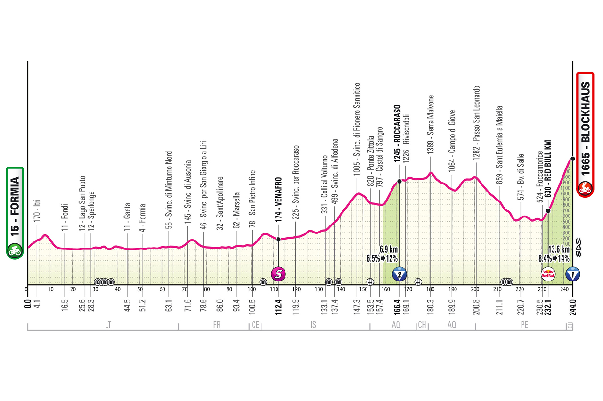

Using the BikeScout Engine, we processed the staggering 245.41 km road stage from Formia to Blockhaus.
Our predictive models integrated real-time meteorological conditions with advanced performance simulations, revealing a brutal endurance test defined by rain, high winds, and a decisive HC final climb.

MISSION TELEMETRY:
- > MODE: ROAD
- > TOTAL DISTANCE: 245.41 KM
- > TOTAL ASCENT: 4423.2 M
- > CLIMB 7: HC (13.67 KM @ 8.4%)
- > WEATHER ALERT: 85% RAIN PROB
- > WIND RISK: GUSTS UP TO 39.6 KM/H
Mission Briefing:
Download tactical PDF and raw JSON metrics for Formia to Blockhaus.
Tactical Breakdown
1. The Long Haul & Critical Positioning
A staggering 245.41 kilometers makes this an ultimate test of endurance. Navigating the peloton efficiently is critical before the heavy climbing starts.
- KM 128.9 Alert: Critical positioning required heading into the Cat 1 climb (19.14 km @ 3.7%). This is where the early breakaways will be tested.
- KM 230.2 Alert: The most crucial fight for position. The peloton must be at the front before hitting the base of the HC climb at KM 231.0.
2. Weather Analysis: Sub-Optimal Conditions
The tactical forecast has flagged a 🔵 [WATCH] status. Conditions are sub-optimal due to a high probability of rain peaking at 85% near 17:00.
- Crosswinds & Gusts: Wind gusts are predicted to reach 39.6 km/h by mid-afternoon (15:00), making crosswind sections highly dangerous.
- Tire Selection: With up to 5.1 mm of rain expected in the later hours, wet-weather grip will be vital on technical descents.
3. The HC Finale & Explosive Action Zones
The race will be decided in the final 15 kilometers. The final HC climb is a brutal 13.67 km stretch averaging 8.4%.
- Extreme Gradients: Immediately following the HC climb, riders face explosive "walls" between KM 240 and 242, with gradients hitting a staggering 25%.
- Technical Drop: At KM 244.91, mere moments from the finish line, there is a high-difficulty technical descent hitting -25%. Wet conditions here could be race-ending.
4. Metabolic and Hydration Management
Due to the sheer distance (6-7+ hours in the saddle), the nutrition briefing outlines massive caloric and hydration requirements.
- Hydration: A total of 7.3 Liters of fluids is required, averaging 971 ml/h.
- Fueling: 299g of carbohydrates targeted (40 g/h) using standard isotonic or whole foods. Sodium intake is critical, sitting at 5820 mg total to combat cramping over the 4400m of total ascent.
Mission Strategy Summary
This stage is an absolute war of attrition. Surviving the distance and the elements is just phase one.
- 1. Shelter and Fuel: Hide from the wind gusts (up to nearly 40km/h) for the first 200km and force down 40g of carbs every hour.
- 2. Win the Positioning Battle: You must be in the top 20 riders at KM 230.2 before the HC climb begins.
- 3. Survive the Drops: Be prepared for extreme 25% walls and a treacherous -25% wet descent in the final 5km.
Conclusion
The Formia to Blockhaus stage is a masterclass in pain. With 4423m of climbing packed heavily into the back half of a 245km route, under the threat of rain and strong gusts, only riders with elite tactical awareness and massive aerobic engines will survive the final HC selection.